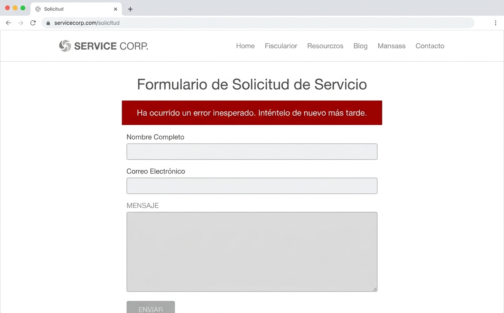
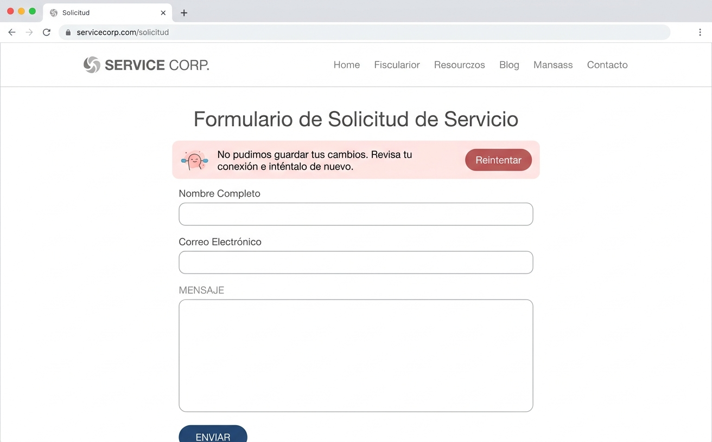

← Volver al portafolio
Mensajes de error más claros
Microcopy para reducir fricción y tickets de soporte
El problema
- El 70% de los tickets de soporte estaban relacionados con errores que el usuario no entendía.
- Al no entender el contexto los usuarios generaban tickets de soporte innecesarios.
- El tiempo medio de resolución de un ticket por error de formulario era de 2 días.
Mi objetivo como Ux Writer
Que cada mensaje de error explicara:
- ¿Qué pasó?
- ¿Cómo resolverlo?
- ¿Qué pasos debía tomar el usuario?
- ¿En qué paso se encontraba?
La explicación no debería culpar al usuario.
Un mensaje de error genérico

Imagen referencial - Antes: mensajes genéricos que no resuelven.
Colaboración con diseño y desarrollo
- Con desarrollo:
- Desarrollo quería mantener los códigos de error técnicos para poder depurar.
- Los convencí de que invertir en mensajes de error no era "perder el tiempo en copy".
- Tuve mucho apoyo de los stakeholders.
- También coordiné con soporte para validar que los nuevos mensajes resolvían dudas reales.
- Con diseño:
- Los diseñadores se oponían pensando que un mensaje más largo podría ser invasivo a nivel visual.
- Sugerí colocar un personaje en el mensaje de error, como el perro de Amazon.
- Y a pesar de las limitaciones técnicas pusieron una carita.
Resultados en un mes
Los tickets por errores de formulario bajaron un 40%.
La tasa de reintento exitoso subió del 45% al 78%.
La percepción de claridad en encuestas subió de 3.1 a 4.6 sobre 5.
Mi aporte fue
- Audité todos los mensajes de error del producto (más de 30).
- Reescribí los 12 más críticos, priorizando por impacto en soporte.
- Creé una guía de estilo para mensajes de error que el equipo sigue usando.

Después: mensajes que explican y guían.